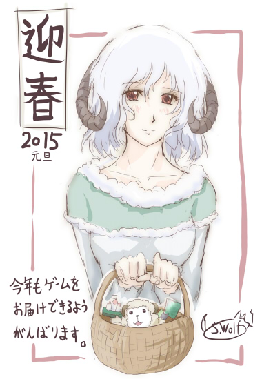

シルバーセカンド開発日誌
落書き 2/2
■
2016-01-01 (金) あけまして 2016▼
あけましておめでとうございます！
ということで、とうとう2016年が始まりました！
今年の私の抱負は、「無理せず生き延びる」です。
去年、一昨年とかなり体の限界に挑んできたので、
今年は少しのんびりして、溢れる活力を創作物にそそぎこみたいですね。
当面は『片道勇者 開発記』を作りつつ、これまで放置されていた
ウディタの修正などを行っていくことになると思います。
そうして長年の垢が取れたら、またプロトタイプ作りをしたり、
色々と面白そうなことに挑戦する日々に戻るでしょう。
今年も何か、面白いことやテーマに出会えるといいなと願っています。
以下は気になった拍手コメントです。皆さま、いつもありがとうございます！
＞プラネットハウルはウルフさんの趣味全開ということでやってみたものの……。
＞もしかしてプレイヤーの接待を意識して易しくしました？ .
入口はやさしく、一番難しい設定だとところどころ辛く、くらいを目指しました。
ただ、締め切りの都合で私の満足度的に「超こだわり」のレベルまでは
調整しきれなかったので、ところどころで調整の甘さを
感じられるところもあるかもしれません。
アマチュア開発はそういうこだわりも強い武器だと思うので、
次はじっくり調整にも時間を使いたいですね。
＞（前略）このまま順調にいけば来年に母になります。ウルフさんの.
＞創作物たちのように、たくさんの人の笑顔に繋がる子になるよう、
＞大事に育てていきたいと思っています。 .
＞大きくなったらウルフさんのゲームを遊んでほしいな～と .
＞思っているので、どうかどうかお身体大切に！（後略） .
おめでとうございます！＆いつもありがとうございます！
17年もやってると、ファンでいてくださる方にもそろそろ
お父さんお母さんになられる方が出てこられて、
だんだんと世代の移り変わりを感じます。
新たな子供たちにもいつか楽しんでもらえるよう、
これからもやり続けられる限り、がんばっていきたいと思います。
＞今年もたくさん楽しませていただきました。
＞来年もまた面白いゲームを期待しております。
＞お体に気をつけて頑張ってください。よいお年を。
ありがとうございます！ そのお言葉が励みになります！
皆さまもお体にはお気を付けて！
今年も一年、よろしくお願いいたします！
皆さまにとってよい1年になりますように。ということで、落書きなどでお茶を濁すシーズンが続きます。
何かしら作ってるのは作っておりますので、
あまり期待せずお待ちください。
【落書き 片道勇者プラスより雇われ理術士】
雇われ理術士、一部の人に人気のようです。
内向的すぎるキャラって今やありがち、
もとい王道な感じですが、私は好きです。
ちなみに彼女、最初の頃は成長すると「雷光」をぶっぱなして
街の住人まで手に掛けることがあるトラブルメーカーでしたが、
アップデートでマシになりました。
あと、あまり知られてないかもしれませんが
理力防御がクソ強くなったので
敵の理力の巻き添えで死ぬことがほとんどないのが利点です。
ただし攻撃は毎度チャージしなきゃいけないので、
普段の戦闘ではちょっと使いにくいポジションという感じです。
スライムや強敵相手だと活躍するかもしれませんね。
ご挨拶が遅れましたが、あけましておめでとうございます。

今年は久しぶりに落ち着いたお正月を迎えることができました。
実現するかはいまだ不透明ですが、今年も去年に引き続き
何か新作ゲームを出したいなーと考えております。
それでは今年も一年、よろしくお願いします！
皆さまの一年がよりよいものになりますように！
■
2014-05-24 (土) シナリオ書き中(落書き)▼片道勇者＋、今週は開発順調です！
が、ストーリーばっかり作ってたため、ネタバレしないようにすると
何も言うことがありませんので、今週も落書きです。
どんどん落書きタグの記事が増えていきます。
↓クリックで全身 ※開発中のゲームとは関係ありません
久々に調子がバリバリ絶好調なので、このペースを維持して5月中に
片道勇者の新3クラス解放クエストの実装を完了させる目標です。
が、こんなこと言ってると確実に何か割り込みで仕事が入るフラグが
立つようなので、ひとまず目標は目標として、
このよい集中力を維持する方に全力を尽くそうと思います。
で、シナリオ作成はいつもながらテキストを書くのが大変です！
すばらしい書き手は壮大なボリュームをパッと書けてしまうのかも
しれませんが、私はこれだけ長いことゲームを作っていても
テキストを書くのは今でも苦手です。
嫌いというわけではないんですが、たとえ少しのテキストでも、
書くと魂が抜けたように疲労してしまいます。
テキストの効力自体はそこそこ評価が高い気もするんですが、
ウマコでたとえると激硬です。死ぬほどひねり出さないと出ません。
たまにスポッと出たのはいいデキになることが多いんですけれどね。
仕事で無理矢理にでも書かなきゃいけないライターの人はすごいと思います。
それができるからプロフェッショナルなんだろうなあ……。
以下は拍手返信です、いつもありがとうございます！
＞もし、片道勇者の作り方の本を書くとしたら、どのような本にしたいですか？
＞どの言語でも、参考にできるような本でしょうか。それとも、ウディタ寄りの
＞書き方をした本でしょうか。（略） .
どの言語でも参考になる本です。たぶんゲームデザイン寄りの話でしょうね。
このシステムはこういう意図で搭載しているとか、
開発中にどういう問題が起きたから何のシステムを付けたとか、
個人開発者にはリソースの限界があるのでここはあきらめたとか、
そもそも何で作ろうと思ったのかとか、そういった話を書くんじゃないでしょうか。
＞特に、片道勇者のアイテム管理に興味があります。1マスに複数の
＞アイテムを置くとしたら、二次配列(x,y座標｜それぞれ99以下) →
＞アイテムリスト → 個別アイテム と見る方法しか思いつきません。
＞片道勇者では、どのような処理をしているのでしょうか？ .
アイテムの管理は、1つの「文字列」として複数アイテムを格納しているので
1マスにいくつのアイテムでも置くことができます。
ウディタは文字列処理もそこそこ得意なので、
いくつデータが入るか分からないDB項目は
「アイテムがなくなったら1行を消す」「増えたら1行を足す」という具合に、
「文字列」で処理するのがもっとも柔軟です。
が、安定した動作をさせるのが難しくて、公開最初の数ヶ月は
アイテムが一個消失するバグがなかなか発見できませんでした。
＞（前回、シレンに永久ヒロインいるからｷｬｯｷｬｳﾌﾌがないのか説に対して）
＞某赤毛のアド○さんにだって永久ヒロインが……！！！！（涙を拭いつつ）
ヒロイン候補として上がるのが11人くらいいて「サッカーできるじゃん！」
という記述がされてるサイトを見て大笑いしてた私です。
子供のときにファミコンの2（だけ）とPCの3を遊んだのが
一番記憶に熱かったので誰が正ヒロインだったのか
印象が薄かったんですが、言われてみれば確かに永久ヒロインいましたぁぁ！ ■
2014-05-10 (土) 小話 とり（有翼人）▼今週は2週間前くらいから続く面白そうな案件が一歩前進しました。
その準備で時間が細切れになってしまったので、
将来必要なお絵かき作業を進めたり、前々から
徐々に続けてたサーバ移転を完了させたりしました。
で、今回サーバ移転を行ったのは以下のサービスです。
コミュニティページ全般・シル学ユーザデータ集・
WOLF RPGエディター公式のトップと一部ページ
（※ウディタ公式のほとんどのサービスは数ヶ月前に移転済み）
もしこの辺りで動かない・エラーが出る等ございましたら
ご連絡いただけますと幸いです。
この移転のおかげで、ちょっとだけサーバ費用が浮く予定です。
【落書き 有翼人（とり）】
さて、今週も特にネタがないので落書きと小話！
毎度私の趣味について語ってるだけのような気がしてきましたが
今後もネタがなければこのまま行きます。
↓クリックで拡大
有翼人は片道勇者のクラスの一つとして検討されていましたが、
6～7種類の案の中から枠内におさまるラスト3種類を選ぶコンペで
新たなプレイスタイルを生み出しにくいという理由でボツになりました。
実際は同じ方向性でも「有翼人」でなく「妖精」にする案のほうが強く、
どちらも「荷物は全然持てない」「飛べる」という特徴にする予定でした。
ただその結果どうなるかというと、弓と矢だけ持って山の上に逃げながら
攻撃するスタイルになりがちで、完成した【狩人】や【冒険家】と
そう変わらないんですね。
もし有翼人を搭載することになるとしたら、ネタだけ置いてある
半獣人系ゲームで使うことになると思います。
「馬鹿食いするけど硬くてブレスが吐ける竜人」「3日分くらい食える狼人」
「空を飛べる有翼人」「水中移動が速い魚人」「機械が扱える人類」など、
個性豊かな種族から1つ選んで冒険するゲームの構想だけ置いてあったのです。
片道勇者より先に構想を進めていたゲームなんですが、その発想の
ほとんど（主にローグライク部分）は片道勇者に使うことになりました。
どうせなら片道勇者の「クラス」も「種族」に変えればよかったんですが、
キャラクターチップを作るのが大変だったので、結局
片道勇者は普通に職業の差で個性付けすることになりました。
おかげで片道勇者はケモケモしすぎない一般向けの空気になったので
これはこれでよかったと思っています。
一方でネムリはケモ欲求の奇妙なはけ口になりましたとさ……
ウォウ～ウォ～。
以下は気になる拍手コメント返信です、いつも皆さまありがとうございます！
＞ところで、Steamで購入していれば片道＋になった時に
＞自動アプデされるのですか？それとも追加購入ですか？
追加購入です！ Steamの扱い方が分からないのではっきりしたことは
言えませんが、DLCという形でリリースされるような気がします。
＞片道勇者ではいくつか実況プレイ動画がありますが .
＞+でも実況動画は出して問題ないのでしょうか？それとも
＞過去の有料ソフト同様禁止or制限付きでしょうか？ .
片道勇者＋に関しては動画配信、アップロードまで有りにする予定です。
今回は海外展開込みなので、禁止するとかえって騒ぎのネタに
なるかもしれないのと、ローグライクというジャンル的に
動画アップOKにしても売上げが下がる影響が小さいと考えているからです。 落書き 2/2
Copyright © SmokingWOLF / Silver Second
 カテゴリ: 落書き
カテゴリ: 落書き カテゴリ: 落書き
カテゴリ: 落書き